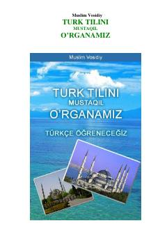

TTTurk tilini bosqichma-bosqich mustaqil o'rganish uchun qulay qo'llanma.
Bu kitob o'zbek tilida yozilgan bo'lib, turk tilini mustaqil yoki ustoz yordamida o'rganmoqchi bo'lganlar uchun mo'ljallangan. Kitobda turk alifbosi, grammatika, lug'at va mashqlar bosqichma-bosqich o'rgatiladi. Har kunlik darslar, so'z yodlash va matnlar orqali o'quvchi turk tilini amaliy o'zlashtirishi mumkin.